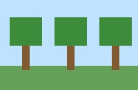
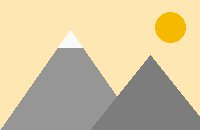
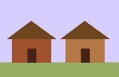

Biomas
Un bioma es una zona del mundo con su paisaje y sus animales.



Bosque, montañas y aldea.
Si talas un bosque entero, tarda mucho en volver: planta un brote por cada árbol que cortes.
Un bioma es una zona del mundo con su paisaje y sus animales.



Bosque, montañas y aldea.
Si talas un bosque entero, tarda mucho en volver: planta un brote por cada árbol que cortes.